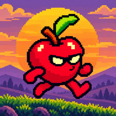
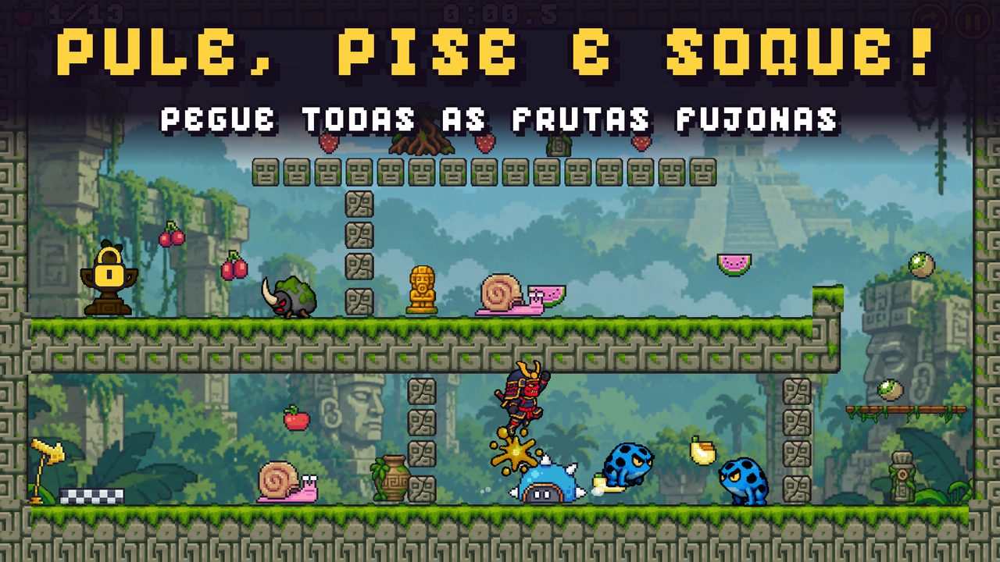
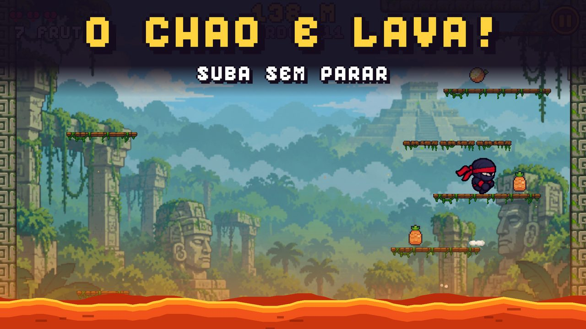
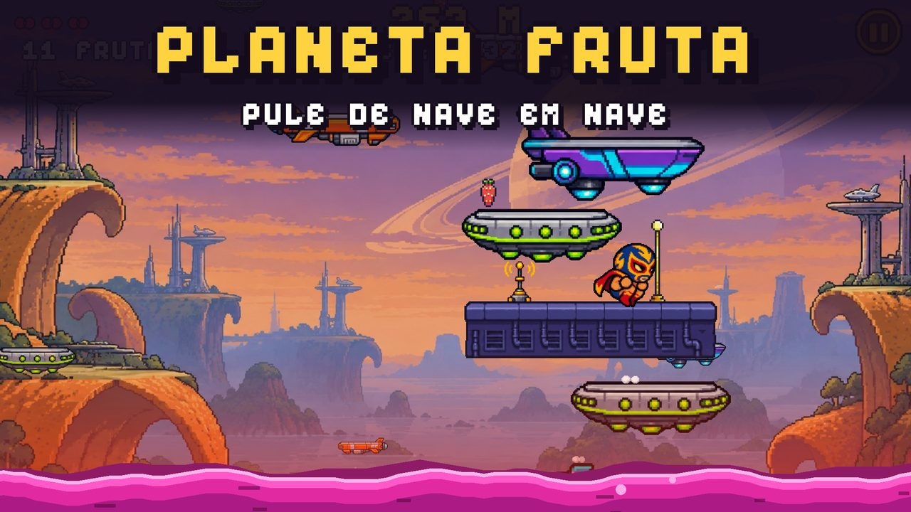
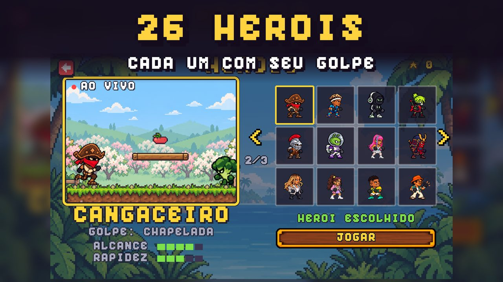
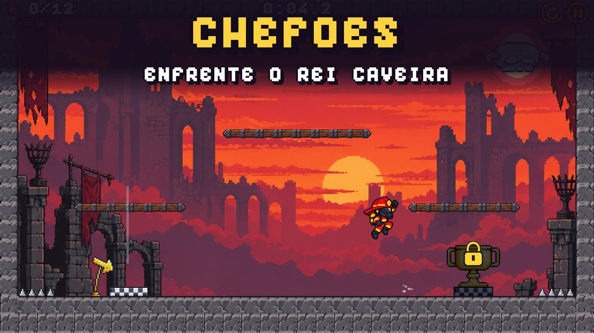
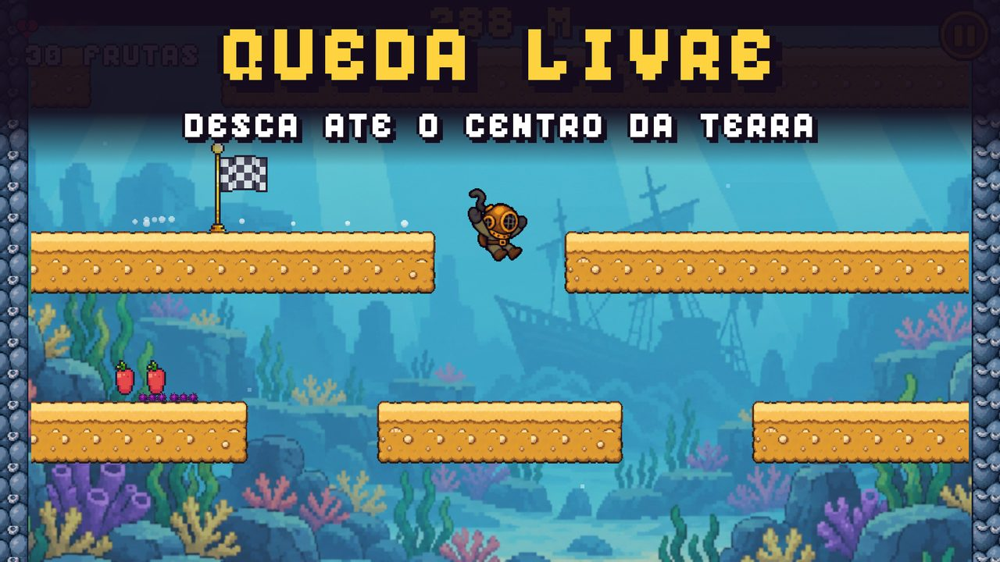
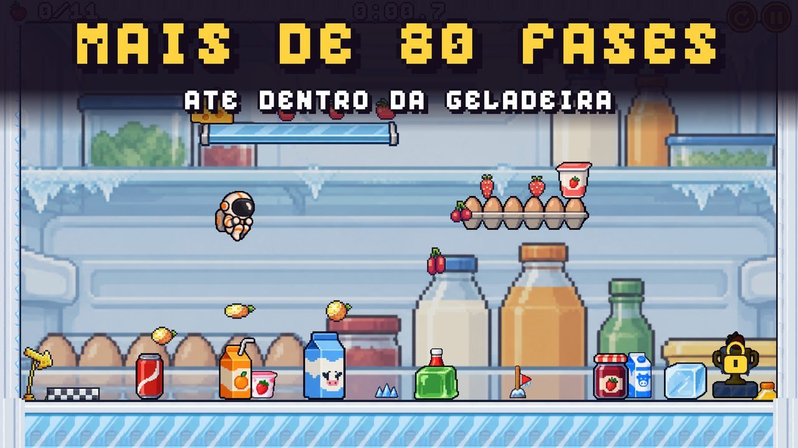
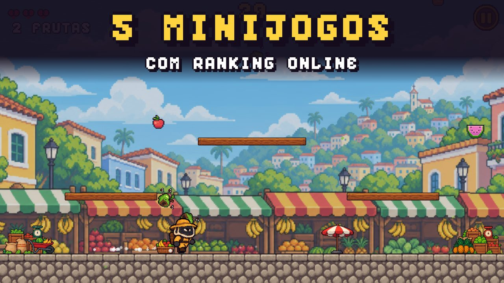

Frutas Fujonas
Jogo de plataforma e aventura em pixel art para Android
Funciona sem internet. Em português, inglês e espanhol.
As frutas fugiram, ficaram bravas e se espalharam pelo mundo. Corra, pule, pise e dê socos para pegar todas de volta! Controle simples, fases curtas e aquela vontade de jogar só mais uma.
Veja o jogo








O que tem no jogo
Mais de 80 fases
Primavera, feira, cozinha gigante, fábrica de suco, vulcão, selva, fundo do mar, cidade neon, praia, inverno e até dentro da geladeira. E vem mais.
Primavera, feira, cozinha gigante, fábrica de suco, vulcão, selva, fundo do mar, cidade neon, praia, inverno e até dentro da geladeira. E vem mais.
5 minijogos com ranking
O Chão é Lava, Planeta Fruta, Queda Livre, Chuva de Frutas e Fuga Fujona. Cada um com o seu ranking online.
O Chão é Lava, Planeta Fruta, Queda Livre, Chuva de Frutas e Fuga Fujona. Cada um com o seu ranking online.
Pule, pise e soque
Caranguejo, polvo, sapo venenoso, pinguim, boneco de neve, salamandra de lava e outros, cada um com um truque.
Caranguejo, polvo, sapo venenoso, pinguim, boneco de neve, salamandra de lava e outros, cada um com um truque.
Chefões
Rei Caveira, Rocha Gigante, Porco Furioso e outros no fim dos mundos.
Rei Caveira, Rocha Gigante, Porco Furioso e outros no fim dos mundos.
26 heróis
Ninja, lutador, mergulhador, astronauta, bombeiro, onça, samurai, cangaceiro e muito mais, cada um com o seu golpe.
Ninja, lutador, mergulhador, astronauta, bombeiro, onça, samurai, cangaceiro e muito mais, cada um com o seu golpe.
Jogo justo
Nenhuma propaganda. Comece com 25 fases, O Chão é Lava e 3 heróis; o Jogo Completo é uma compra única.
Nenhuma propaganda. Comece com 25 fases, O Chão é Lava e 3 heróis; o Jogo Completo é uma compra única.